pacman::p_load(igraph, tidygraph, ggraph, ggforce, tidytext, visNetwork, tidyverse, jsonlite, plotly, patchwork, knitr, kableExtra, skimr, DT, ggridges,ggridges, ggthemes,colorspace,textstem, ggiraph)# Set the default display settings for numeric values to see large numbers in fulloptions(scipen =999, digits =15)
Import data
Show the code
mc3 <-fromJSON("data/mc3.json")
Extract the node data frame
Show the code
# Extract the nodes data# convert the fields to characters first to extract the information embedded as listmc3_nodes <-as_tibble(mc3$nodes) %>%# mutate() and as.character() are used to convert the field data type from list to charactermutate(country =as.character(country),id =as.character(id),product_services =as.character(product_services),revenue_omu =as.numeric(as.character(revenue_omu)),type =as.character(type)) %>%# Re-organise the columnsselect(id,country,type,product_services,revenue_omu) %>%# remove duplicate recordsdistinct() %>%# omu is denominated in smaller currency units, so we will round all values to the nearest whole unit to make it easier to work withmutate(revenue_omu =round(revenue_omu,0))
Note: Have to be mindful of character((0)) and unknown. Recode to NAs before passing to text sensing or put as as part of the stop words during text sensing
In terms of edges, we will have BO-Coy, CC-Coy, Coy-Coy but we would probably not see the BO-CO
Extract Edges data frame
Show the code
# Extract the edge datamc3_edges <-as_tibble(mc3$links) %>%# remove the duplicatesdistinct() %>%#mutate() and as.character() are used to convert the field data type from list to charactermutate(source =as.character(source),target =as.character(target),type =as.character(type)) %>%group_by(source, target, type) %>%summarise(weight =n()) %>%# Included to ensure self-links are excluded, although there's none foundfilter(source!=target) %>% ungroup
Observations
Although included in the codes about, there is no duplicate records or self-links
Grouping by source, target and type does not reduce the number of records, and the weight for all records show 1. This means the edge information contain the relationships between the entities involved and does not connote the volume of transactions between them
We will store the mc3 nodes and edges data frames in rds format for ease of subsequent retrieval. This “write” code need only be executed once. Thereafter we can reload the mc3_nodes and edges data frames for data wrangling.
Show the code
# write and load the mc3_nodes and edges dataframe. With this, we need not re-extract from the raw dataset subsequently#write_rds(mc3_nodes, "data/mc3_nodes.rds")mc3_nodes =read_rds("data/mc3_nodes.rds")#write_rds(mc3_edges, "data/mc3_edges.rds")mc3_edges <-read_rds("data/mc3_edges.rds")
Initial Data Exploration
Explore the edge data frame
We first inspect the data frame using skim()
Show the code
skim(mc3_edges)
Data summary
Name
mc3_edges
Number of rows
24036
Number of columns
4
_______________________
Column type frequency:
character
3
numeric
1
________________________
Group variables
None
Variable type: character
skim_variable
n_missing
complete_rate
min
max
empty
n_unique
whitespace
source
0
1
6
700
0
12856
0
target
0
1
6
28
0
21265
0
type
0
1
16
16
0
2
0
Variable type: numeric
skim_variable
n_missing
complete_rate
mean
sd
p0
p25
p50
p75
p100
hist
weight
0
1
1
0
1
1
1
1
1
▁▁▇▁▁
Observations
There is no field with missing value
There are 2 unique relationship types: Entity - Beneficial Owner (BO), Entity - Company Contact (CC)
The total number of entities under source and target columns is 34,121. This forms the upper bound of entities/nodes we should have in the analysis.
The source column has a maximum length of 700 characters, which is atypical of most entity names and this will need further examination
Examine records with lengthy text in source column
We extract some records with more than 100 characters in the source column
Show the code
# Set variable n for character limit n <-100# filter such recordsfiltered_data <- mc3_edges %>%filter(str_length(source) > n)# Inspect the filtered recordshead(filtered_data, n=5)
# A tibble: 5 × 4
source target type weight
<chr> <chr> <chr> <int>
1 "c(\"1 Swordfish Ltd Solutions\", \"1 Swordfish Ltd Solut… Danie… Comp… 1
2 "c(\"Adriatic Squid Ltd. Liability Co\", \"Brisa del Este… Angel… Bene… 1
3 "c(\"Adriatic Squid Ltd. Liability Co\", \"Brisa del Este… Shell… Comp… 1
4 "c(\"Ancla Azul ОАО Holdings\", \"Ancla Azul ОАО Holdings… Jenni… Comp… 1
5 "c(\"Ancla del Este OJSC\", \"Irish Trout S.p.A. Carriers… Carlo… Comp… 1
We noticed that these rows contain list of entities in the source column, implying that there were records with many source entities to one single target entity. To flatten the records, we extracted and the converted such rows from the edge data frame to additional link records using the separate_rows() function to split each element into a separate row while duplicating the values in other columns.
Show the code
# extract records with lists in source columnfiltered_data_list <- mc3_edges%>%# filter records starting with 'c("' in the source columnfilter(str_starts(source, '^c\\("')) %>%# remove the first 2 character and last character of the source columnmutate(source =substr(source, 3, nchar(source) -1)) %>%# split each element in the list in source column to a new rowseparate_rows(source, sep =",") %>%# remove empty string at the start of the source columnsmutate(source =trimws(source)) %>%# remove the opening and closing quotes from the source columnmutate(source =substr(source, 2, nchar(source) -1))filtered_data_list
# A tibble: 5,302 × 4
source target type weight
<chr> <chr> <chr> <int>
1 1 Ltd. Liability Co Yesenia Oliver Company Contacts 1
2 1 Ltd. Liability Co Yesenia Oliver Company Contacts 1
3 1 Swordfish Ltd Solutions Daniel Reese Company Contacts 1
4 1 Swordfish Ltd Solutions Daniel Reese Company Contacts 1
5 Saharan Coast BV Marine Daniel Reese Company Contacts 1
6 Olas del Sur Estuary Daniel Reese Company Contacts 1
7 5 Limited Liability Company Brittany Jones Beneficial Owner 1
8 Bahía de Coral Kga Brittany Jones Beneficial Owner 1
9 5 Limited Liability Company Elizabeth Torres Beneficial Owner 1
10 Bahía de Coral Kga Elizabeth Torres Beneficial Owner 1
# ℹ 5,292 more rows
After we had flattened the records with list in the source column, we combined these processed edge records with those records which did not have any list in the source column originally.
Show the code
# Extract records which had list in their source columnfiltered_data <- mc3_edges %>%filter(str_starts(source, '^c\\("'))# Extact records which did not have any list in the source column originallyremaining_data <- mc3_edges %>%anti_join(filtered_data)# Union remaining_data and desired_rowsmc3_edges_flat <-bind_rows(remaining_data, filtered_data_list) %>%# group to eliminate duplicate source, target, type recordsgroup_by(source,target,type) %>%mutate(weight=sum(weight)) %>%ungroup() %>%# remove repeated rows after groupingdistinct()
Get count of records by type
Show the code
mc3_edges_flat %>%group_by(type) %>%summarise(count =n()) %>%ggplot(aes(x = type, y = count)) +geom_bar(stat ="identity") +geom_text(aes(label = count), vjust =-0.5) +theme_minimal() +labs(x ="Edge Type", y ="No. of\nTransactions",title ='Count of Reationships by Type') +theme(axis.title.y =element_text(angle =0, vjust =0.5, hjust =1))
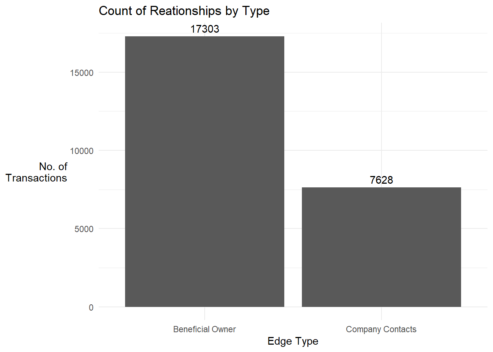
Prepare the nodes data frame using records from the edges data frame
(i) We extracted and combined the entities listed in the source and target columns into an id column. For the target entities, we retained edge type information based on the record since that was the role of the target entity. For the the source entities, we defaulted their type as Company.
Show the code
# Prepare the nodes information using the source and target information in the edge data frameid1 <- mc3_edges_flat %>%select(source) %>%mutate(type ="Company") %>%rename(id = source)id2 <- mc3_edges_flat %>%select(target, type) %>%rename(id = target)# Get unique nodes from source and target columns of edge recordsmc3_nodes_fr_edges <-rbind(id1, id2) %>%distinct()
(ii) Next, we left joined the mc3_nodes_fr_edges with the mc3_nodes data frame by id and type to get more information about the entities.
Show the code
# Get unique nodes from source and target columns of edge recordsmc3_nodes_combined <-left_join(mc3_nodes_fr_edges, mc3_nodes, by =c("id", "type"))
Observations
The number of node records increased from 35,386 to 35,806. This meant that there were duplicate node records with same id and type (but have different country, revenue_omu or product_services data) in the mc3_nodes dataframe. We examined these records in the following section.
Quick visualisation of the network for nodes with high betweenness centrality
(i) We computed centrality measures of the nodes. To limit the number of entities to be displayed, we extracted those with betweenness centrality scores of >= 100,000.
Show the code
# compute the centrality measures for nodesmc3_graph <-tbl_graph(nodes = mc3_nodes_combined,edges = mc3_edges_flat,directed =FALSE) %>%mutate(betweenness_centrality =centrality_betweenness(),closeness_centrality =centrality_closeness())# set random seed for consistencyset.seed(123)# plot the graphmc3_graph %>%# we only plot nodes with high betweeness_centralityfilter(betweenness_centrality >=100000) %>%ggraph(layout ="fr") +geom_edge_link(aes(alpha=0.5)) +geom_node_point(aes(linewidth = betweenness_centrality,alpha =0.5)) +scale_size_continuous(range=c(0.01,0.5))+theme_graph() +labs(title ="Initial Network Plot based on Edge Data")+theme(legend.position ="none")
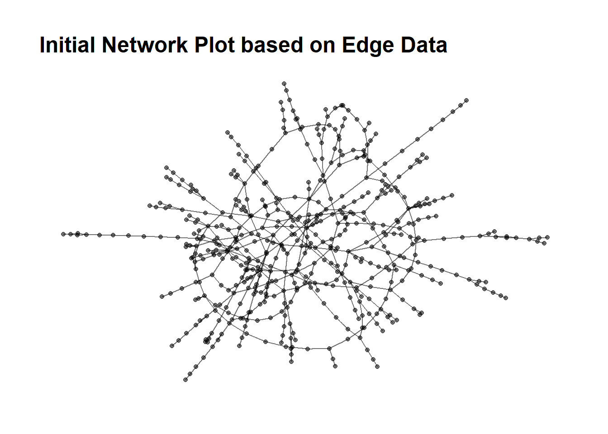
Explore the nodes dataframe
Inspect the data frame using skim()
Show the code
skim(mc3_nodes_combined)
Data summary
Name
mc3_nodes_combined
Number of rows
35806
Number of columns
5
_______________________
Column type frequency:
character
4
numeric
1
________________________
Group variables
None
Variable type: character
skim_variable
n_missing
complete_rate
min
max
empty
n_unique
whitespace
id
0
1.00
6
64
0
34422
0
type
0
1.00
7
16
0
3
0
country
30797
0.14
2
14
0
85
0
product_services
30797
0.14
4
1737
0
2172
0
Variable type: numeric
skim_variable
n_missing
complete_rate
mean
sd
p0
p25
p50
p75
p100
hist
revenue_omu
32016
0.11
655107.47
9433034.55
3652
8439.5
17567
50227.75
310612303
▇▁▁▁▁
Aggregate information of entities with multiple records having the same id and type information.
This is achieved by the following steps:
Identified records with same id and type information
For records with same id, type and country information, we concatenated the product_services information and sum up their revenue_omu information. This assumes that a company only has 1 record per country.
For record with the same id and type information , we concatenated the country information and also count the number of countries involved. We tracked companies with presence in multiple countries as this did not appear to be the norm for the data set.
Show the code
# Identify records with same id and type informationresult <- mc3_nodes_combined %>%filter(duplicated(mc3_nodes_combined[, c("id", "type")]) |duplicated(mc3_nodes_combined[, c("id", "type")], fromLast =TRUE))# Concatenate text values in product_services and sum revenue_omu for records with the same id, type, and countryresult_same_coy <- result %>%group_by(id, type, country) %>%summarize(product_services =paste(product_services, collapse =", "),revenue_omu =sum(revenue_omu)) %>%ungroup()# Arrange alphabetically in the country column, then concatenate text values for records with the same id, typeresult2 <- result_same_coy %>%arrange(country) %>%group_by(id, type) %>%summarize(country =paste(country, collapse =", "),country_count =n(),product_services =paste(product_services, collapse =", "),revenue_omu =sum(revenue_omu))
Removed the duplicates from mc3_combined data and combined the aggregated id and type records to it. They were 35,386 unique node entities, the same number we got from the edge data frame.
mc3_nodes_cleaned <- mc3_nodes_cleaned %>%arrange(type,country,product_services) %>%group_by(id) %>%summarize(type =paste(type,collapse =", "),type_count =n(),country =paste(country, collapse =", "),country_count =max(country_count),product_services =paste(product_services, collapse =", "),revenue_omu =sum(revenue_omu)) %>%# clean up the country and product_services column after concatenationmutate(country =ifelse(country %in%c('NA',"NA, NA"), NA, country),product_services =ifelse(product_services %in%c('NA',"NA, NA"), NA, product_services))
Visualise frequency of node types
Show the code
mc3_nodes_cleaned %>%group_by(type) %>%summarise(count =n()) %>%ggplot(aes(x = type, y = count)) +geom_bar(stat ="identity") +geom_text(aes(label = count), vjust =-0.5) +theme_minimal() +labs(x ="Node Type", y ="No. of\nEntities",title ='Count of Nodes by Type') +theme(axis.title.y =element_text(angle =0, vjust =0.5, hjust =1))
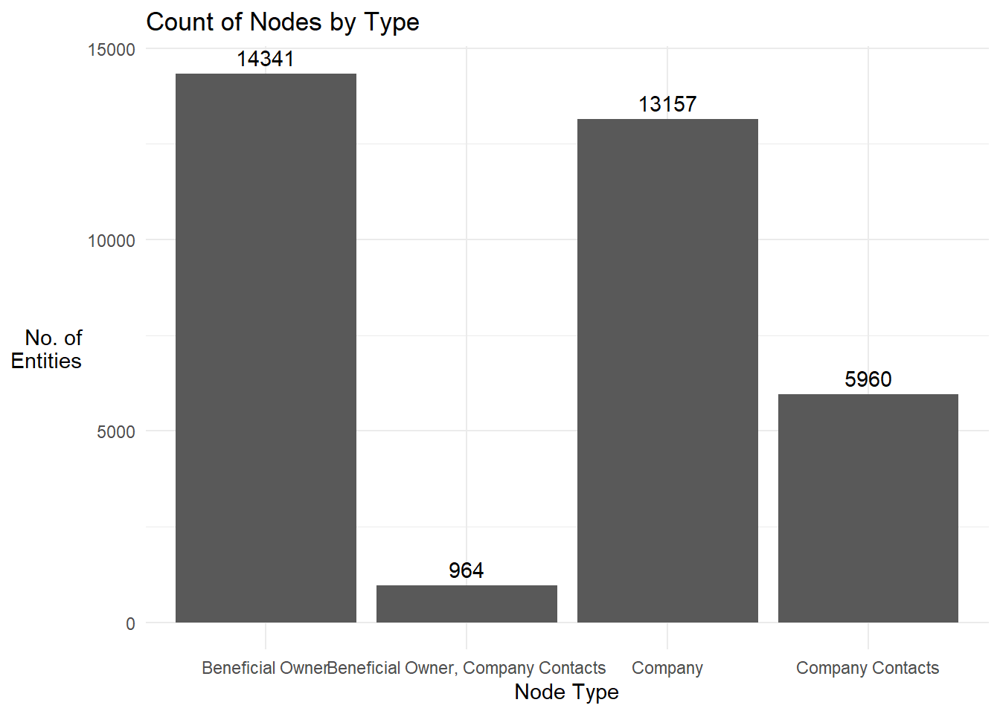
Observation
We had a new type of entity which plays the role of Beneficial Owner and Company Contact
Visualise frequency of Top 8 countries for the nodes
Show the code
mc3_nodes_cleaned %>%filter(!is.na(country)) %>%group_by(country) %>%summarise(count =n()) %>%top_n(10) %>%arrange(desc(count)) %>%ggplot(aes(x =reorder(country, -count), y = count)) +geom_bar(stat ="identity") +geom_text(aes(label = count), vjust =-0.5) +theme_minimal() +labs(x ="Country", y ="No. of\nNodes",title ='Count of Nodes by Country') +theme(axis.title.y =element_text(angle =0, vjust =0.5, hjust =1))
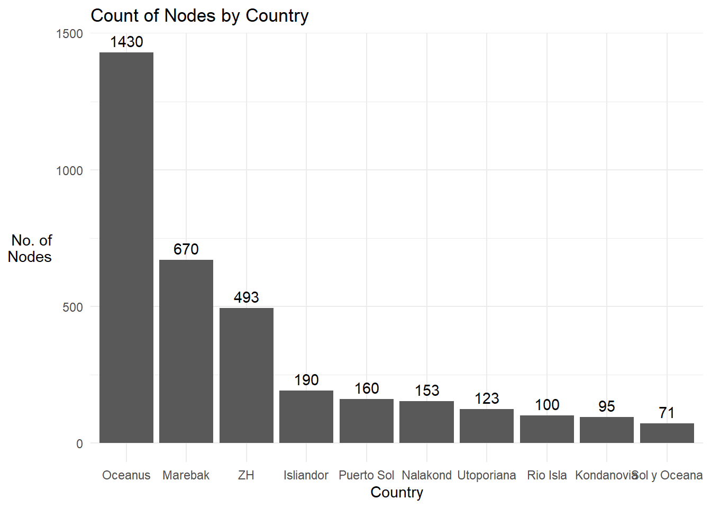
Observation
Oceanus, Marebak and ZH were the top 3 countries where most nodes domiciled.
Check the frequency count of various product types
Show the code
# Get the freq count of records by product_services column freq_count_pdt_svcs <- mc3_nodes_cleaned %>%group_by(product_services) %>%summarise(count =n()) %>%arrange(desc(count))datatable(freq_count_pdt_svcs, class ="compact", options =list(pageLength =5), caption ="Table 1: Frequency Count of product_services Column",rownames =FALSE)
We noticed that there was a large number of the records with empty strings . Unknown or “,”. The last category was due to the concatenation we did earlier to aggregate the information for nodes with multiple records. We re-coded “Unknown” and “,” to NA.
There were still round 2,170 different types of product and services that the nodes offered. The information within the product_services column were not clean and we performed text sensing in the next section to identify entities in the fishing industry for further analysis
Tokenise the words used under the product_services column
# Maintain my own list of stopwordsstopwords =c(NA,'products','services','unknown','related','canned')# Remove stopwordsstopwords_removed <- token_nodes %>%anti_join(stop_words) %>%filter(!word %in% stopwords)
stopwords_removed %>%count(word, sort =TRUE) %>%top_n(15) %>%mutate(word =reorder(word, n)) %>%ggplot(aes(x = word, y = n)) +geom_col() +xlab(NULL) +coord_flip() +labs(x ="Count",y ="Unique words",title ="Count of unique words found in product_services field")
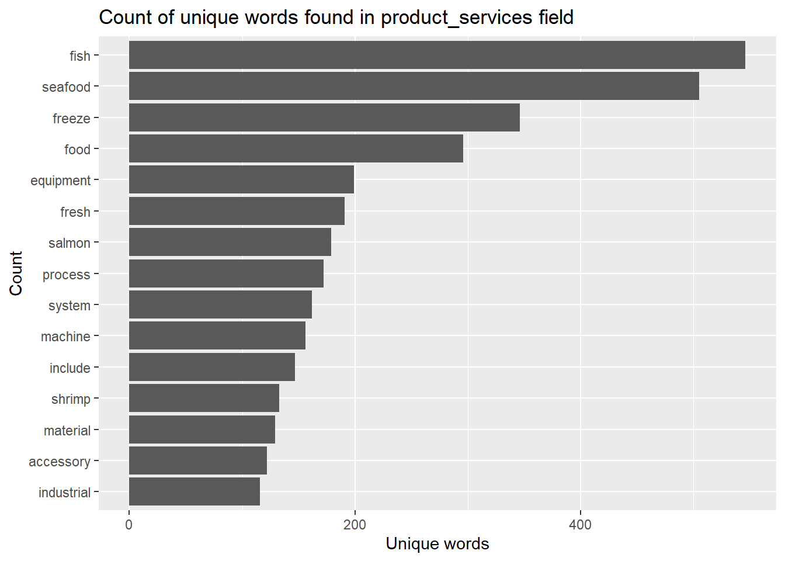
We generated word_count table and exported it for manual categorization. This helped to ensure that we were able to capture words related to the fishing industry more accurately.
We aggregated the processed words and combined it with the mc3_nodes_cleaned2 data frame
Show the code
# Group the words by idprocessed_text <- stopwords_removed %>%group_by(id) %>%summarize(product_services2 =paste(word, collapse =", "))# left join mc3_nodes_cleaned2 with the processed textmc3_nodes_cleaned2 <-left_join(mc3_nodes_cleaned2, processed_text, by =c("id"))
We categorised the entities as being involved or not involved in fishing. Also, we identified some keywords to categories under businesses. Although this approach was not too precise, it would help the us to gain quick understanding of the nature of the activity the entity was involved in.
# A tibble: 11 × 2
category count
<chr> <int>
1 chemical and plastic 156
2 consumer goods 331
3 energy and fuel 64
4 freight and transport 187
5 fruits, vegetables and other food 160
6 machinery and equipment 142
7 meat and dairy 60
8 metals 152
9 other 567
10 seafood 694
11 <NA> 31909
Prepare the seafood_nodes and edge records for network examination
Show the code
# extract the entities categorised as seafoodseafood_entities <- mc3_nodes_cleaned3 %>%filter(category=='seafood')# extract the edge link records related to these seafood entitiesseafood_edges <- mc3_edges_flat[mc3_edges_flat$source %in% seafood_entities$id | mc3_edges_flat$target %in% seafood_entities$id, ]# extract the seafood_nodes records using the edge informationid1 <- seafood_edges %>%select(source) %>%rename(id = source)id2 <- seafood_edges %>%select(target) %>%rename(id = target)# Get unique nodes from source and target columns of edge records# left join with the mc3_nodes_cleaned3 dataset to get the attributes for the nodesseafood_nodes <-rbind(id1, id2) %>%distinct() %>%left_join(mc3_nodes_cleaned3,by=c('id'))
# A tbl_graph: 3369 nodes and 2721 edges
#
# An unrooted forest with 648 trees
#
# A tibble: 3,369 × 9
id type type_count country country_count product_services revenue_omu
<chr> <chr> <int> <chr> <dbl> <chr> <dbl>
1 2 Limited… Comp… 1 Marebak 1 Canning, proces… NA
2 9 Charter… Comp… 1 Marebak 1 Fish and fish p… 36658
3 Adair S.A… Comp… 1 Mawazam 1 Frozen cephalop… 33309
4 Adams Gro… Comp… 1 ZH 1 A range of fish… 9056
5 Adriatic … Comp… 1 Nalako… 1 Fish and seafoo… 113379
6 Adriatic … Comp… 1 Nalako… 1 Canned seafood … 16452
# ℹ 3,363 more rows
# ℹ 2 more variables: product_services2 <chr>, category <chr>
#
# A tibble: 2,721 × 4
from to type weight
<int> <int> <chr> <int>
1 1 695 Beneficial Owner 1
2 1 696 Company Contacts 1
3 1 697 Company Contacts 1
# ℹ 2,718 more rows
Observations:
There were 648 subgraphs within the seafood_graph
We computed the degree, betweenness centrality measure of each node
Show the code
seafood_graph <- seafood_graph %>%activate(nodes) %>%mutate(degree_centrality =centrality_degree(),betweenness_centrality =centrality_betweenness()) %>%# get subgraph id for the nodemutate(group_id =components(seafood_graph)$membership)
Visualise the membership size of each subgraph within the network
Show the code
freq_count <- seafood_graph %>%activate(nodes) %>%as.tibble() %>%arrange(group_id) %>%group_by(group_id) %>%summarise(count =n()) ggplot(freq_count, aes(x = count)) +geom_histogram(binwidth =1, fill ="steelblue") +xlab("Number of entities in the subgraph") +ylab("Number of Subgraphs") +ggtitle("Frequency Count of Group IDs in Customized Bins")
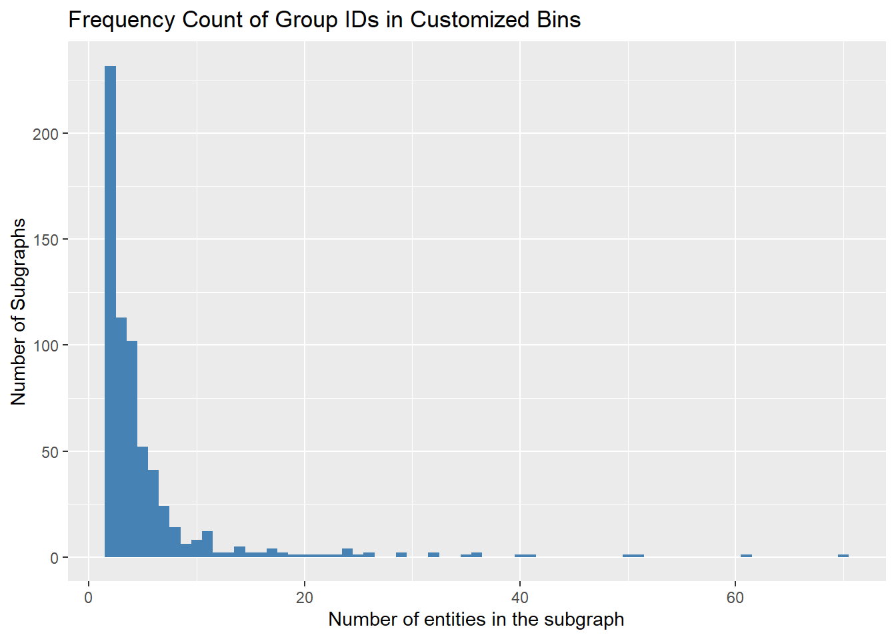
Looking for businsses groups with anomalies
We were informed that companies with anomalous structures are far more likely to be involved in IUU (or other “fishy” business). Hence, we look into the following aspects of structural anormalies for among the seafood business groups:
Business Groups (or subgraphs) with high network diameter
Business Groups with with exceptional business revenue
Business Groups that operate across multiple countries with a number entities residing in a high risk country
Business Groups with high network diameter
To have a business structure wtihin a business group, we will need the sub-graph’s network diameter to have a minimum value of 2 and above. The higher the diameter, the more complex the structure of the business group is.
We
Show the code
# get the list of group_ids for each subgraph in the networksubgraph_ids <-unique(freq_count$group_id)# assign a diameter_list to store the resultsdiameter_list <-list()# for each group_idfor (x in subgraph_ids) {# filter the relevant nodes for the group id nodes <- seafood_graph %>%activate(nodes) %>%as.tibble() %>%filter(group_id == x)# extract the relevant edge records edges <- seafood_edges %>%filter(source %in% nodes$id| target %in% nodes$id)# construct the subgraph subgraph <-tbl_graph(nodes = nodes, edges = edges, directed =FALSE)# calculate the network diamter diameter <-with_graph(subgraph, graph_diameter())# append output to list diameter_list[[as.numeric(x)]] <- diameter}# network_diameter <-tibble(group_id = subgraph_ids,network_diameter =unlist(diameter_list))
Plotting the distribution of the network diamter of the groups
Show the code
diameter <- network_diameter %>%count(network_diameter, sort =TRUE) %>%ggplot(aes(x =as.factor(network_diameter), y = n)) +geom_col() +xlab(NULL) +labs(x ="Network Diameter",y ="Count",title ="Count of Subgraphs by Network Diameter") +scale_x_discrete(breaks =1:7) +geom_text(aes(label = n), vjust =-0.5)diameter
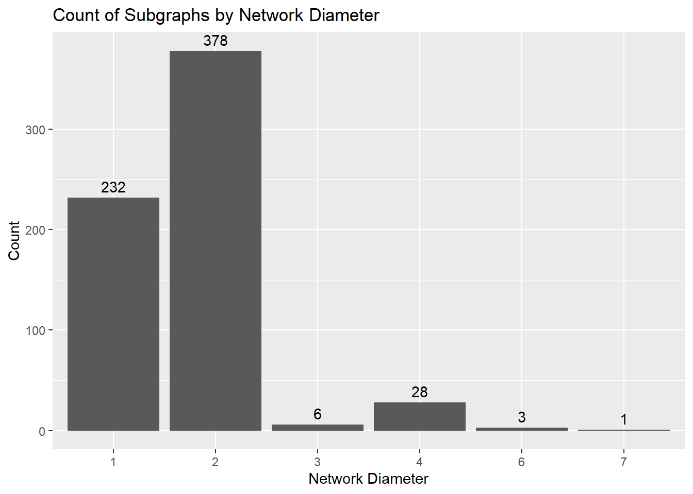
There were 4 groups of entities with a network diameter of 6. Let’s extract their details to examine them
Before we proceed to review the network first of the subgraph, we created 3 functions to help us with out analysis:
(i) Function to extract the nodes and edges records of entities relating to the subgraph group.
Show the code
createNE_by_Group <-function(groupid) { relevant_entities <- seafood_graph %>%activate(nodes) %>%as.tibble()%>%arrange(id) %>%filter(group_id == groupid) relevant_edges <- mc3_edges_flat %>%filter(source %in% relevant_entities$id| target %in% relevant_entities$id) %>%rename(from = source) %>%rename(to = target) %>%mutate(title = type)# extract the seafood_nodes records using the edge information Cid1 <- relevant_edges %>%select(from) %>%rename(id = from) Cid2 <- relevant_edges %>%select(to) %>%rename(id = to)# Get unique nodes from source and target columns of edge records# left join with the mc3_nodes_cleaned3 dataset to get the attributes for the nodes relevant_nodes <-rbind(Cid1, Cid2) %>%distinct() %>%left_join(mc3_nodes_cleaned3,by=c('id')) %>%arrange(id) %>%mutate(label = id) %>%mutate(group = type) %>%mutate(title =paste('id = ',id, "<br>Country =",country, '<br>Entity Type =',type,'<br>Revenue (omu) =',revenue_omu,'<br>Biz Category =',category,'<br>Biz Activity =',product_services)) title =paste("Subsidiary Group ID",groupid)list(relevant_edges = relevant_edges, relevant_nodes = relevant_nodes, title = title)}# , '<br>Degree Centrality =',degree_centrality,'<br>Between Centrality =',betweenness_centrality))# # normalise the betwenness and degree centrality measure# mutate(# deg_norm = ifelse(degree_centrality == 0, 0, round((degree_centrality - min(degree_centrality)) / (max(degree_centrality) - min(degree_centrality)),3)),# bet_norm = ifelse(betweenness_centrality == 0, 0, round((betweenness_centrality - min(betweenness_centrality)) / (max(betweenness_centrality) - min(betweenness_centrality)),3))# )
(ii) Function to first identify the subgraph group id of a given entity and then extract the nodes and edges entity’s subgraph
This generates the nodes and edges data frames of a 2-hopnetwork graph of the given entity which would facilitate our examination of the entity.
Show the code
createNE_by_id <-function(entityid) {# obtain the subgraph group id of the entity groupid <- seafood_graph %>%activate(nodes) %>%filter(id == entityid) %>%select(group_id) %>%as.tibble()# assign the group id to a variable groupid <- groupid$group_id[1]# pass the group id into the createNE_by_Group() function to generate the subgraph output <-createNE_by_Group(groupid)# return the nodes and edges data frames for graphinglist(relevant_edges = output$relevant_edges,relevant_nodes = output$relevant_nodes,title = entityid)}
(ii) Function to plot an interactive Network with the given nodes and edges data
Show the code
createGraph <-function(r_nodes , r_edges,title) {visNetwork(nodes = r_nodes, # Visualize the nodesedges = r_edges, # Visualize the edgesmain =paste("Network graph of", title),height ="500px", width ="100%") %>%visIgraphLayout(layout ="layout_nicely") %>%visEdges(smooth =list(enables =TRUE, type ='straightCross'), # Customize the appearance of edgesshadow =FALSE,dash =FALSE) %>%visGroups(groupname ="Company", shape ="icon", icon =list(code ="f1ad", size =75)) %>%# Define a group with icon shape for companiesvisGroups(groupname ="Beneficial Owner", shape ="icon", icon =list(code ="f007", color ="red")) %>%# Define a group with red icon shape for beneficial ownersvisGroups(groupname ="Company Contacts", shape ="icon", icon =list(code ="f007", color ="blue")) %>%# Define a group with blue icon shape for company contactsvisGroups(groupname ="Beneficial Owner, Company Contacts", shape ="icon", icon =list(code ="f007", color ="purple")) %>%# Define a group with purple icon shape for both beneficial owners and company contactsaddFontAwesome() %>%# Add Font Awesome icons to the visualizationvisOptions(highlightNearest =list(enabled =TRUE, degree =1, hover =TRUE), # Enable highlighting of nearest nodes on hovernodesIdSelection =TRUE,selectedBy ="group") %>%# Enable node selection by groupvisInteraction(hideEdgesOnDrag =TRUE) %>%# Hide edges while dragging nodesvisLegend() %>%# Display legendvisLayout(randomSeed =123) # Set a random seed for consistent layout}
Subgraphs Group ID 210 vs Group 34
We first plotted their interactive network graphs to facilitate our comparison. Group ID 210 had the highest network diameter of 7 while Group ID 34 has network diameter 4. Although there was a difference, it did not influence the anomalies discussed below.
Show the code
result <-createNE_by_Group(210)createGraph(result$relevant_nodes,result$relevant_edges, result$title)
Show the code
result <-createNE_by_Group(34)createGraph(result$relevant_nodes,result$relevant_edges, result$title)
Anomaly 1: Multiple Beneficial Owners surrounding a Seafood Company
While it is common to have several owners per company, it was perplexing to see more than 10 beneficial owners (BOs) associated with a seafood entity. For Kerala Market SRL Wave on the right image below, it had 16 BOs (the red and purple icons), whereas Mar de Cristal AS from Group ID 34 only had 3 BOs.
Common (Group ID 34)
Uncommon (Group ID 210)
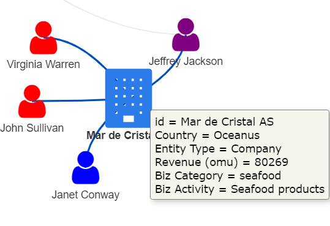
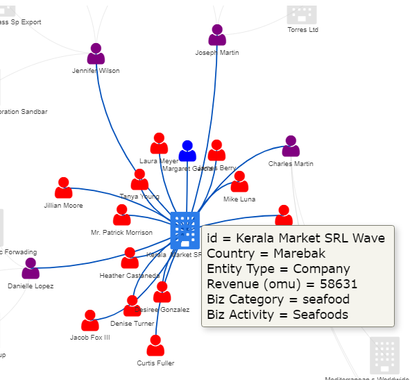
Indeed, the histogram on the frequency count of BOs for companies below shows that based on the edge data set, the number of BOs, at 95% CI, for companies was between 1 and 10 and hence any entity with more than 10 BOs can be regarded as exceptional.
Show the code
avg_BOs <- mc3_edges_flat %>%filter(type =='Beneficial Owner') %>%group_by(source) %>%summarise(BO_count =n()) # Calculate the 95% confidence intervallower_ci <-quantile(avg_BOs$BO_count, 0.025)upper_ci <-quantile(avg_BOs$BO_count, 0.975)# Create the histogramggplot(avg_BOs, aes(x = BO_count)) +geom_histogram(binwidth =1, fill ="lightblue", color ="black") +labs(title ="Histogram of BO_count", x ="BO_count", y ="Frequency") +theme_minimal() +annotate("text", x =mean(avg_BOs$BO_count), y =10,label =paste("95% CI:", lower_ci, "-", upper_ci), hjust =-0.1, vjust=-5, color ="red") +xlim(0, 40)
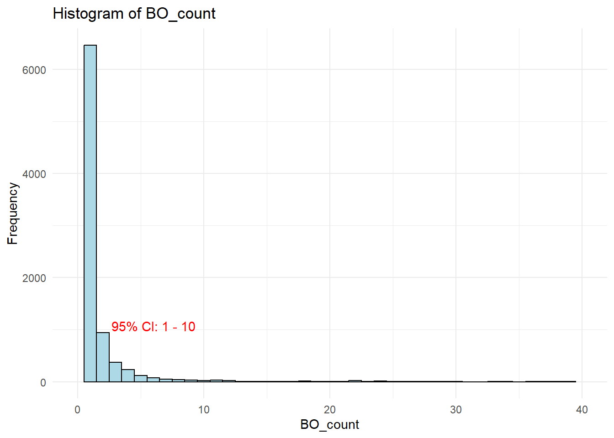
Anomaly 2: Multiple and Same Set of Beneficial Owners Associated with 2 Companies
As an extension of Anomaly 1 above, what was even more interesting was that we had multiple and the same set of BOs associated with 2 companies. In the diagram on the right below, we saw that The Salted Pearl - Oyj Marine Conservation and SeaScape Foods Ltd Freight (both from Group ID 210) sharing the same set of 16 BOs. The structure of Group ID 34 would be closer to what we see usually, where 2 companies may share some common owners, but not exactly the same set of owners.
Common (Group ID 34)
Uncommon (Group ID 210)
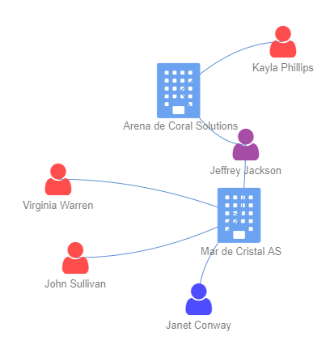
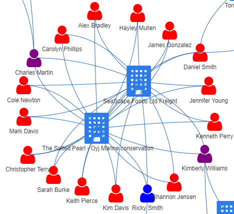
The above anomarly can be detected by the subgraph’s membership size-to-diameter ratio. The higher the ratio
Show the code
ratio <- freq_count %>%inner_join(network_diameter,by=c('group_id')) %>%mutate(size_to_diameter_ratio =round(count/network_diameter,2)) %>%arrange(desc(size_to_diameter_ratio))ratio
result <-createNE_by_Group(102)createGraph(result$relevant_nodes,result$relevant_edges, result$title)
It was interesting to note that Congo Rapids Ltd. Corporation had so many BOs when most companies had fewer than 10 of them. One reasonable explanation, judging from the the range of products and services that it offered, could be that it was a large scale co-operation with many subsidiaries. However, it could also be a red-flag for IUU as this would allow vessel owners to select the vessel flag state of a BO that would facilitate their illicit activities, such as gaining access to fisheries resources which are reserved for vessels owned by the local BO.
Business Groups with reported revenue
Companies exist to create profit for their owners. A larger company would generate more revenue and in our context, we used the number of BOs as a proxy for the company size. Let check out the average revenue generated per BO in the Seafood network.
Show the code
# find out the number of BOs (Company Contacts excluded) for every companyBO_for_company <- seafood_edges %>%filter(!type =='Company Contacts') %>%group_by(source) %>%summarise(BO_count =n())# compute revenue (in OMU) per BO per companyrevenue_per_BO <- seafood_nodes %>%inner_join(BO_for_company, by=c("id"="source")) %>%# for this analysis, we will impute revenue_omu as 1 so that they can be considered in the analysismutate(revenue_per_BO =ifelse(is.na(revenue_omu), 1,round(revenue_omu/BO_count,0)),# given the wide range of revenue, we applied log on the revenue_per_BOlog_revenue =log(revenue_per_BO))# Create the box plot using ggplotrevenue_boxplot <-ggplot(revenue_per_BO, aes(x =1, y=log_revenue,text =paste("id:", id,"<br>Country:", country,"<br>Revenue:", revenue_omu,"<br>No. of BOs:", BO_count,"<br>Revenue Per BO:", revenue_per_BO,"<br>Biz Category:", category,"<br>Biz Acitivity:",product_services))) +geom_boxplot(fill ="lightblue", color ="black") +labs(title ="Box Plot of Log Revenue") +theme_minimal() +coord_flip()# Convert the ggplot object to an interactive plotly object, activate tooltupggplotly(revenue_boxplot, tooltip ='text')
Show the code
# try the ggiraph apprach
3 entities have exceptionally high Revenue per BO. They were Baker and Sons, Barron LLC, Caracola del Mar NV Family. Let’s take a look at their networks.
Network Graph Comparison of Top 3 Entities with Highest Revenue Per BO
We plotted the network graph for Baker and Sons below and used the same function to generate the same for the other 2 entities.
Show the code
result<-createNE_by_id("Baker and Sons")createGraph(result$relevant_nodes,result$relevant_edges,result$title)
Anomaly 3: BO of a seafood company, Baker and Sons, having a number of other unrelated businesses
Other than owning another company (Faroe Islands Ltd Express) associated with seafood, we noticed one BO of Baker and Sons, Michael Johnson, owned a number of other companies there were unrelated to the seafood businesses. This structure was in contrast with the other 2 high revenue per BO entities as shown below, where the BOs only had 1 company to manage.
Barron LLC
Caracola del Mar NV Family
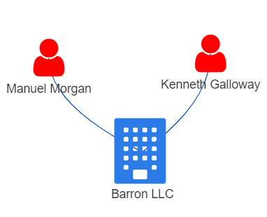
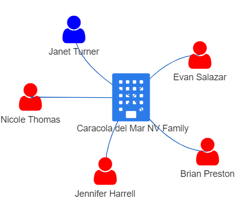
While having a BO with numerous businesses unrelated to fishing does not directly imply involvement in illegal fishing, there’s a possibility that such unrelated business could be a front to launder illicit gains from IUU or act as a false front for other illegal activities. Fisheye could consider analysing the entity’s financial transactions, including sources of funding, payment flows,to look for any suspicious patterns, such as large amounts of cash transactions or frequent transfers to offshore jurisdictions known for illegal fishing activities.
It is also worth noting that the 2 top companies earning extra-ordinary revenue of OMU104m and OMU 63m were based in ZH.
Network Graph Comparison of 2 Companies with
Summary statistics for the revenue of the companies involved
Show the code
summary(revenue_per_BO$revenue_omu)
Min. 1st Qu. Median Mean
4667.000000 17297.000000 39946.000000 519204.413203
3rd Qu. Max. NA's
91443.000000 104095830.000000 73
Show the code
summary(revenue_per_BO$revenue_per_BO)
Min. 1st Qu. Median Mean 3rd Qu.
1.000000 3630.500000 12429.000000 173698.253112 33160.000000
Max.
34698610.000000
Show the code
plot_ly(data = revenue_per_BO %>%# Excluded the 3 entities with high revenue per BO to see the plotfilter(log_revenue<=13.41), x =~BO_count, y =~revenue_omu,text =~paste("Entity:", id, "<br>Country:", country,"<br>Revenue:", revenue_omu,"<br>No. of BOs:", BO_count,"<br>Revenue Per BO:", revenue_per_BO,"<br>Biz Category:", category),color =~revenue_per_BO, colors =colorRampPalette(c("blue", "red"))(nrow(revenue_per_BO))) %>%layout(title ='Log Revenue vs No. Of BOs of Companies')
We would expect companies with lower revenue to be of smaller operating scale and had fewer BOs as seen from the clustered points at the point of origin in the scatterplot above. One such exception was Rufiji Delta GmbH Express (Rufiji).
Anomaly 4: Companies with little revenue and yet a substantial number of BOs.
Rufiji was an outlier among the companies in its sector, with a remarkably high number of BOs. It had 39 BOs while its revenue was only OMU 6137. This meant that each BO received an average of OMU 157, which was far below the median revenue per BO of OMU 12,429 for the sector. The reasons for this unusual situation were not clear from the data. A
From the network, only 7 out of 39 BOs had an alternate source of income from another company. There is no other data that discloses how the rest of the BOs earned their living. This raised some questions about their economic situation and sustainability, and if there are commercially justifiable reasons for having a large pool of BOs.
Conclusion
The lack of sufficient data hindered our ability to confirm our suspicion that some illicit activities were indeed taking place among the different business entities engaged in seafood commerce. However, we think our findings provide a solid basis for more in-depth investigation.
The exercise has been especially challenging, requiring a variety of data processing and manipulating technqiues ranging from natural language processing to social network analysis. This is on top of the visual analytics skills that we have to apply to detect anomalies. On the positive side, it has exposed us to different aspects of data science and how they can be integrated to solve complex problems.
The exploitation of company structures by illegal fishing operators, Trygg Mat Tracking, https://www.tm-tracking.org/post/illegal-fishing-operators-exploit-company-structures-to-cover-up-illegal-operations